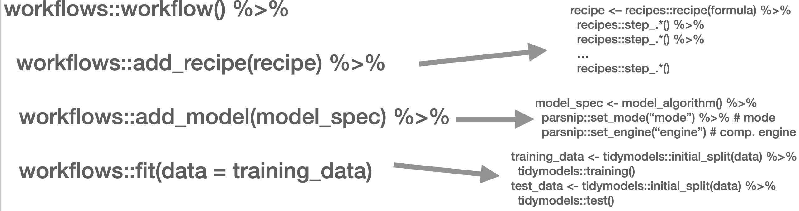
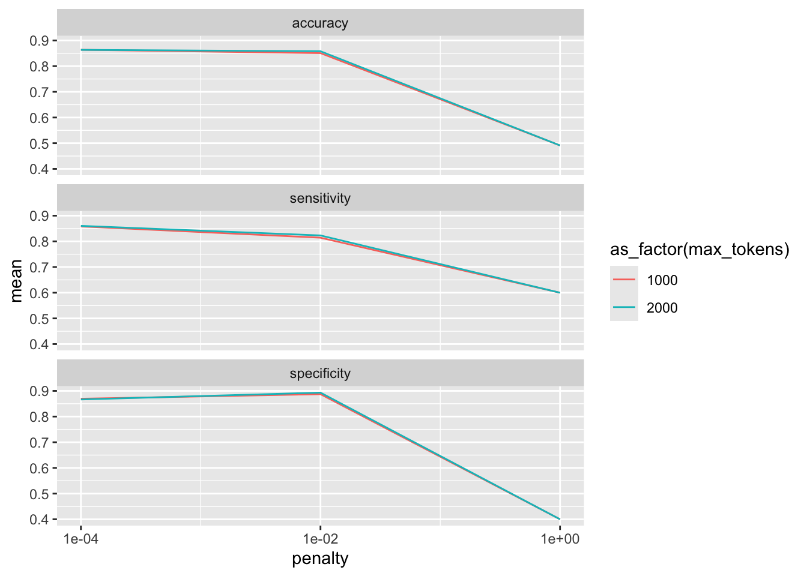
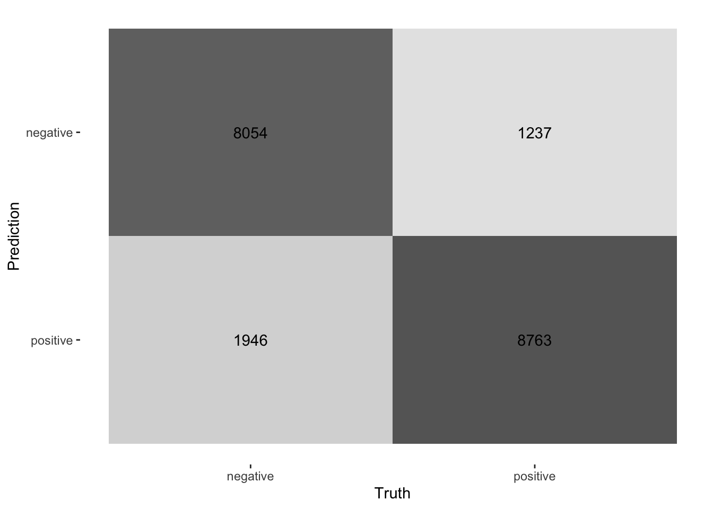

Chapter 11: Supervised Classification
In the following script, I will introduce you to the supervised classification of text. Supervised means that I will need to “show” the machine a data set that already contains the value or label I want to predict (the “dependent variable”) as well as all the variables that are used to predict the class/value (the independent variables or, in ML lingo, features). In the examples I will showcase, the features are the tokens that are contained in a document. Dependent variables are in my example sentiment.
The Process
Overall, the process of supervised classification using text in R encompasses the following steps:
- Split data into training and test set
- Pre-processing and featurization
- Training
- Evaluation and tuning (through cross-validation) (… repeat 2.-4. as often as necessary)
- Applying the model to the held-out test set
- Final evaluation
This is mirrored in the workflow() function from the workflows (Vaughan 2022) package. There, you define the pre-processing procedure (add_recipe() – created through the recipe() function from the recipes (Kuhn and Wickham 2022) and/or textrecipes (Hvitfeldt 2022) package(s)), the model specification with add_spec() – taking a model specification as created by the parsnip (Kuhn, Vaughan, and Hvitfeldt 2022) package.

In the next part, other approaches such as Support Vector Machines (SVM), penalized logistic regression models (penalized here means, loosely speaking, that insignificant predictors which contribute little will be shrunk and ignored – as the text contains many tokens that might not contribute much, those models lend themselves nicely to such tasks), random forest models, or XGBoost will be introduced. Those approaches are not to be explained in-depth, third-party articles will be linked though, but their intuition and the particularities of their implementation will be described. Since we use the tidymodels (Kuhn and Wickham 2020) framework for implementation, trying out different approaches is straightforward. Also, the pre-processing differs, recipes and textrecipes facilitate this task decisively. Third, the evaluation of different classifiers will be described. Finally, the entire workflow will be demonstrated using a Twitter data set.
The first example for today’s session is the IMDb data set. First, we load a whole bunch of packages and the data set.
needs(discrim, glmnet, textrecipes, tidymodels, tidytext, tidyverse, workflows)
imdb_data <- read_csv("https://www.dropbox.com/s/0cfr4rkthtfryyp/imdb_reviews.csv?dl=1")Split the data
The first step is to divide the data into training and test sets using initial_split(). You need to make sure that the test and training set are fairly balanced which is achieved by using strata =. prop = refers to the proportion of rows that make it into the training set.
split <- initial_split(imdb_data, prop = 0.2, strata = sentiment)
imdb_train <- training(split)
imdb_test <- testing(split)
glimpse(imdb_train)Rows: 5,000
Columns: 2
$ text <chr> "Not even the Beatles could write songs everyone liked, and …
$ sentiment <chr> "negative", "negative", "negative", "negative", "negative", …imdb_train |> count(sentiment)# A tibble: 2 × 2
sentiment n
<chr> <int>
1 negative 2500
2 positive 2500Pre-processing and featurization
In the tidymodels framework, pre-processing and featurization are performed through so-called recipes. For text data, so-called textrecipes are available.
textrecipes – basic example
In the initial call, the formula needs to be provided. In our example, we want to predict the sentiment (“positive” or “negative”) using the text in the review. Then, different steps for pre-processing are added. Similar to what you have learned in the prior chapters containing measures based on the bag of words assumption, the first step is usually tokenization, achieved through step_tokenize(). In the end, the features need to be quantified, either through step_tf(), for raw term frequencies, or step_tfidf(), for TF-IDF. In between, various pre-processing steps such as word normalization (i.e., stemming or lemmatization), and removal of rare or common words Hence, a recipe for a very basic model just using raw frequencies and the 1,000 most common words would look as follows:
imdb_basic_recipe <- recipe(sentiment ~ text, data = imdb_train) |>
step_tokenize(text) |> # tokenize text
step_tokenfilter(text, max_tokens = 1000) |> # only retain 1000 most common words
# additional pre-processing steps can be added, see next chapter
step_tfidf(text) # final step: add term frequenciesIn case you want to know what the data set for the classification task looks like, you can prep() and finally bake() the recipe. Note that we need to specify the data set we want to pre-process in the recipe’s manner. In our case, we want to perform the operations on the data specified in the basic_recipe and, hence, need to specify new_data = NULL.
imdb_basic_recipe |>
prep() |>
bake(new_data = NULL)# A tibble: 5,000 × 1,001
sentiment tfidf_text_1 tfidf_text_10 tfidf_text_2 tfidf_text_20 tfidf_text_3
<fct> <dbl> <dbl> <dbl> <dbl> <dbl>
1 negative 0 0 0 0 0.0119
2 negative 0.0270 0 0.0240 0 0
3 negative 0 0 0 0 0
4 negative 0 0.0178 0.0203 0 0
5 negative 0 0 0 0 0
6 negative 0 0 0 0 0
7 negative 0.0215 0 0.0192 0 0
8 negative 0.00812 0.00637 0 0 0.00829
9 negative 0 0 0 0 0
10 negative 0 0 0 0 0
# ℹ 4,990 more rows
# ℹ 995 more variables: tfidf_text_4 <dbl>, tfidf_text_5 <dbl>,
# tfidf_text_7 <dbl>, tfidf_text_8 <dbl>, tfidf_text_80 <dbl>,
# tfidf_text_9 <dbl>, tfidf_text_a <dbl>, tfidf_text_able <dbl>,
# tfidf_text_about <dbl>, tfidf_text_above <dbl>,
# tfidf_text_absolutely <dbl>, tfidf_text_across <dbl>, tfidf_text_act <dbl>,
# tfidf_text_acted <dbl>, tfidf_text_acting <dbl>, tfidf_text_action <dbl>, …textrecipes – further preprocessing steps
More steps exist. These always follow the same structure: their first two arguments are the recipe (which in practice does not matter, because they are generally used in a “pipeline”) and the variable that is affected (in our example “text” because it is the one to be modified). The rest of the arguments depends on the function. In the following, we will briefly list them and their most important arguments. Find the exhaustive list here,
step_tokenfilter(): filters tokensmax_times =upper threshold for how often a term can appear (removes common words)min_times =lower threshold for how often a term can appear (removes rare words)max_tokens =maximum number of tokens to be retained; will only keep the ones that appear the most often- you should filter before using
step_tforstep_tfidfto limit the number of variables that are created
step_lemma(): allows you to extract the lemma- in case you want to use it, make sure you tokenize via
spacyr(by usingstep_tokenize(text, engine = "spacyr"))
- in case you want to use it, make sure you tokenize via
step_pos_filter(): adds the Part-of-speech tagskeep_tags =character vector that specifies the types of tags to retain (default is “NOUN”, for more details see here or consult chapter @ref(day4))- in case you want to use it, make sure you tokenize via
spacyr(by usingstep_tokenize(text, engine = "spacyr"))
step_stem(): stems tokenscustom_stem =specifies the stemming function. Defaults toSnowballC. Custom functions can be provided.options =can be used to provide arguments (stored as named elements of a list) to the stemming function. E.g.,step_stem(text, custom_stem = "SnowballC", options = list(language = "russian"))
step_stopwords(): removes stopwordssource =alternative stopword lists can be used; potential values are contained instopwords::stopwords_getsources()custom_stopword_source =provide your own stopword listlanguage =specify language of stop word list; potential values can be found instopwords::stopwords_getlanguages()
step_ngram(): takes into account order of terms, provides more contextnum_tokens =number of tokens in n-gram – defaults to 3 – trigramsmin_num_tokens =minimal number of tokens in n-gram –step_ngram(text, num_tokens = 3, min_num_tokens = 1)will return all uni-, bi-, and trigrams.
step_word_embeddings(): use pre-trained embeddings for wordsembeddings(): tibble of pre-trained embeddings
step_normalize(): performs unicode normalization as a preprocessing stepnormalization_form =which Unicode Normalization to use, overview instringi::stri_trans_nfc()
themis::step_upsample()takes care of unbalanced dependent variables (which need to be specified in the call)over_ratio =ratio of desired minority-to-majority frequencies
Model specification
Now that the data is ready, the model can be specified. The parsnip package is used for this. It contains a model specification, the type, and the engine. For Naïve Bayes, this would look like the following (note that you will need to install the relevant packages – here: discrim – before using them):
nb_spec <- naive_Bayes() |> # the initial function, coming from the parsnip package
set_mode("classification") |> # classification for discrete values, regression for continuous ones
set_engine("naivebayes") # needs to be installedOther model specifications you might deem relevant:
- Logistic regression
lr_spec <- logistic_reg() |>
set_engine("glm") |>
set_mode("classification")- Logistic regression (penalized with Lasso):
lasso_spec <- logistic_reg(mixture = 1) |>
set_engine("glm") |>
set_mode("classification") - SVM (here,
step_normalize(all_predictors())needs to be the last step in the recipe)
svm_spec <- svm_linear() |>
set_mode("regression") |> # can also be "classification"
set_engine("LiblineaR")- Random Forest (with 100 decision trees):
rf_spec <- rand_forest(trees = 100) |>
set_engine("ranger") |>
set_mode("classification") # can also be "regression"- xgBoost (with 20 decision trees):
xg_spec <- boost_tree(trees = 20) |>
set_engine("xgboost") |>
set_mode("regression") # can also be classificationModel training – workflows
A workflow can be defined to train the model. It will contain the recipe, hence taking care of the pre-processing, and the model specification. In the end, it can be used to fit the model.
imdb_nb_wf <- workflow() |>
add_recipe(imdb_basic_recipe) |>
add_model(nb_spec)It can then be fit using fit().
imdb_nb_basic <- imdb_nb_wf |> fit(data = imdb_train)Model evaluation
Now that a first model has been trained, its performance can be evaluated. In theory, we have a test set for this. However, the test set is precious and should only be used once we are sure that we have found a good model. Hence, for these intermediary tuning steps, we need to come up with another solution. So-called cross-validation lends itself nicely to this task. The rationale behind it is that chunks from the training set are used as test sets. So, in the case of 10-fold cross-validation, the training set is divided into 10 distinctive chunks of data. Then, 10 models are trained on the respective 9/10 of the training set that is not used for evaluation. Finally, each model is evaluated against the respective held-out “test set” and the performance metrics averaged.

First, the folds need to be determined. we set a seed in the beginning to ensure reproducibility.
needs(tune)
set.seed(123)
imdb_folds <- vfold_cv(imdb_train)fit_resamples() trains models on the respective samples. (Note that for this to work, no model must have been fit to this workflow before. Hence, you either need to define a new workflow first or restart the session and skip the fit-line from before.)
imdb_nb_resampled <- fit_resamples(
imdb_nb_wf,
imdb_folds,
control = control_resamples(save_pred = TRUE),
metrics = metric_set(accuracy, recall, precision)
)
#imdb_nb_resampled |> write_rds("imdb_nb_resampled.rds")collect_metrics() can be used to evaluate the results.
- Accuracy tells me the share of correct predictions overall
- Precision tells me the number of correct positive predictions
- Recall tells me how many actual positives are predicted properly
In all cases, values close to 1 are better.
collect_predictions() will give you the predicted values.
nb_rs_metrics <- collect_metrics(imdb_nb_resampled)
nb_rs_predictions <- collect_predictions(imdb_nb_resampled)This can also be used to create the confusion matrix by hand.
confusion_mat <- nb_rs_predictions |>
group_by(id) |>
mutate(confusion_class = case_when(.pred_class == "positive" & sentiment == "positive" ~ "TP",
.pred_class == "positive" & sentiment == "negative" ~ "FP",
.pred_class == "negative" & sentiment == "negative" ~ "TN",
.pred_class == "negative" & sentiment == "positive" ~ "FN")) |>
count(confusion_class) |>
ungroup() |>
pivot_wider(names_from = confusion_class, values_from = n)Now you can go back and adapt the pre-processing recipe, fit a new model, or try a different classifier, and evaluate it against the same set of folds. Once you are satisfied, you can proceed to check the workflow on the held-out test data.
Hyperparameter tuning
Some models also require the tuning of hyperparameters (for instance, lasso regression). If we wanted to tune these values, we could do so using the tune package. There, the parameter that needs to be tuned gets a placeholder in the model specification. Through variation of the placeholder, the optimal solution can be empirically determined.
So, in the first example, we will try to determine a good penalty value for LASSO regression.
lasso_tune_spec <- logistic_reg(penalty = tune(), mixture = 1) |>
set_mode("classification") |>
set_engine("glmnet")We will also play with the numbers of tokens to be included:
imdb_tune_basic_recipe <- recipe(sentiment ~ text, data = imdb_train) |>
step_tokenize(text) |>
step_tokenfilter(text, max_tokens = tune()) |>
step_tf(text)The dials (Kuhn and Frick 2022) package provides the handy grid_regular() function which chooses suitable values for certain parameters.
lambda_grid <- grid_regular(
penalty(range = c(-4, 0)),
max_tokens(range = c(1e3, 2e3)),
levels = c(penalty = 3, max_tokens = 2)
)Then, we need to define a new workflow, too.
lasso_tune_wf <- workflow() |>
add_recipe(imdb_tune_basic_recipe) |>
add_model(lasso_tune_spec)For the resampling, we can use tune_grid() which will use the workflow, a set of folds (we use the ones we created earlier), and a grid containing the different parameters.
set.seed(123)
tune_lasso_rs <- tune_grid(
lasso_tune_wf,
imdb_folds,
grid = lambda_grid,
metrics = metric_set(accuracy, sensitivity, specificity)
)Again, we can access the resulting metrics using collect_metrics():
collect_metrics(tune_lasso_rs)# A tibble: 18 × 8
penalty max_tokens .metric .estimator mean n std_err .config
<dbl> <int> <chr> <chr> <dbl> <int> <dbl> <chr>
1 0.0001 1000 accuracy binary 0.864 10 0.00433 Preprocessor1_…
2 0.0001 1000 sensitivity binary 0.858 10 0.00537 Preprocessor1_…
3 0.0001 1000 specificity binary 0.869 10 0.00441 Preprocessor1_…
4 0.01 1000 accuracy binary 0.851 10 0.00329 Preprocessor1_…
5 0.01 1000 sensitivity binary 0.814 10 0.00556 Preprocessor1_…
6 0.01 1000 specificity binary 0.887 10 0.00298 Preprocessor1_…
7 1 1000 accuracy binary 0.491 10 0.00240 Preprocessor1_…
8 1 1000 sensitivity binary 0.6 10 0.163 Preprocessor1_…
9 1 1000 specificity binary 0.4 10 0.163 Preprocessor1_…
10 0.0001 2000 accuracy binary 0.864 10 0.00254 Preprocessor2_…
11 0.0001 2000 sensitivity binary 0.860 10 0.00439 Preprocessor2_…
12 0.0001 2000 specificity binary 0.867 10 0.00267 Preprocessor2_…
13 0.01 2000 accuracy binary 0.858 10 0.00273 Preprocessor2_…
14 0.01 2000 sensitivity binary 0.823 10 0.00542 Preprocessor2_…
15 0.01 2000 specificity binary 0.893 10 0.00332 Preprocessor2_…
16 1 2000 accuracy binary 0.491 10 0.00240 Preprocessor2_…
17 1 2000 sensitivity binary 0.6 10 0.163 Preprocessor2_…
18 1 2000 specificity binary 0.4 10 0.163 Preprocessor2_…We can also visualize this:
collect_metrics(tune_lasso_rs) |>
ggplot() +
geom_line(aes(penalty, mean, color = as_factor(max_tokens))) +
facet_wrap(vars(.metric), nrow = 3) +
scale_x_log10(breaks = c(0.0001, 0.01, 1)) 
Also, we can use show_best() to look at the best result. Subsequently, select_best() allows me to choose it. In real life, we would choose the best trade-off between a model as simple and as good as possible. Using select_by_pct_loss(), we choose the one that performs still more or less on par with the best option (i.e., within 2 percent accuracy) but is considerably simpler. Finally, once we are satisfied with the outcome, we can finalize_workflow() and fit the final model to the test data.
show_best(tune_lasso_rs, metric = "accuracy")# A tibble: 5 × 8
penalty max_tokens .metric .estimator mean n std_err .config
<dbl> <int> <chr> <chr> <dbl> <int> <dbl> <chr>
1 0.0001 1000 accuracy binary 0.864 10 0.00433 Preprocessor1_Mode…
2 0.0001 2000 accuracy binary 0.864 10 0.00254 Preprocessor2_Mode…
3 0.01 2000 accuracy binary 0.858 10 0.00273 Preprocessor2_Mode…
4 0.01 1000 accuracy binary 0.851 10 0.00329 Preprocessor1_Mode…
5 1 1000 accuracy binary 0.491 10 0.00240 Preprocessor1_Mode…final_lasso_imdb <- finalize_workflow(lasso_tune_wf, select_by_pct_loss(tune_lasso_rs, metric = "accuracy", -penalty))Final fit
Now we can finally fit our model to the training data and predict on the test data. last_fit() is the way to go. It takes the workflow and the split (as defined by initial_split()) as parameters.
final_fitted <- last_fit(final_lasso_imdb, split)
collect_metrics(final_fitted)# A tibble: 3 × 4
.metric .estimator .estimate .config
<chr> <chr> <dbl> <chr>
1 accuracy binary 0.841 Preprocessor1_Model1
2 roc_auc binary 0.919 Preprocessor1_Model1
3 brier_class binary 0.122 Preprocessor1_Model1collect_predictions(final_fitted) |>
conf_mat(truth = sentiment, estimate = .pred_class) |>
autoplot(type = "heatmap")
Supervised ML with tidymodels in a nutshell
Here, we give you the condensed version of how you would train a model on a number of documents and predict on a certain test set. To exemplify this, I use Tweets from British MPs from the two largest parties.
First, you take your data and split it into training and test set:
set.seed(1)
timelines_gb <- read_csv("https://www.dropbox.com/s/1lrv3i655u5d7ps/timelines_gb_2022.csv?dl=1")Rows: 59444 Columns: 2
── Column specification ────────────────────────────────────────────────────────
Delimiter: ","
chr (2): party, text
ℹ Use `spec()` to retrieve the full column specification for this data.
ℹ Specify the column types or set `show_col_types = FALSE` to quiet this message.split_gb <- initial_split(timelines_gb, prop = 0.3, strata = party)
party_tweets_train_gb <- training(split_gb)
party_tweets_test_gb <- testing(split_gb)Second, define your text pre-processing steps. In this case, we want to predict partisanship based on textual content. We tokenize the text, upsample to have balanced classed in terms of party in the training set, and retain only the 1,000 most commonly appearing tokens.
twitter_recipe <- recipe(party ~ text, data = party_tweets_train_gb) |>
step_tokenize(text) |> # tokenize text
themis::step_upsample(party) |>
step_tokenfilter(text, max_tokens = 1000) |>
step_tfidf(text) Third, the model specification needs to be defined. In this case, we go with a random forest classifier containing 50 decision trees.
rf_spec <- rand_forest(trees = 50) |>
set_engine("ranger") |>
set_mode("classification") Finally, the pre-processing “recipe” and the model specification can be summarized in one workflow and the model can be fit to the training data.
twitter_party_rf_workflow <- workflow() |>
add_recipe(twitter_recipe) |>
add_model(rf_spec)
party_gb <- twitter_party_rf_workflow |> fit(data = party_tweets_train_gb)Now we have arrived at a model we can apply to make predictions using augment(). Finally, we can evaluate its accuracy on the test data by taking the share of correctly predicted values.
predictions_gb <- augment(party_gb, party_tweets_test_gb)
mean(predictions_gb$party == predictions_gb$.pred_class)[1] 0.698909Side note: Active learning
The augment() function can also be used to choose observations whose annotation could boost the classifier’s performance. Here we want to find the tweets whose .pred_Conservative and .pred_Labour are close to 0.5. An exemplary script for choosing new observations for annotation can look like this. Of course, this example is fictitious as we already have all the labels. If you were to use this for creating an annotation set, make sure to remove the labels (here: party) before looking at the data to maintain the validity of the annotation process. Also, adding an id helps with joining the data after annotation.
anno_set_active_learning <- predictions_gb |>
mutate(distance_cons_05 = abs(.pred_Conservative-0.5),
distance_lab_05 = abs(.pred_Conservative-0.5)) |>
group_by(party, text) |>
summarize(dist_05 = min(distance_cons_05, distance_lab_05)) |>
ungroup() |>
slice_min(dist_05, n = 100) |>
rowid_to_column("id")`summarise()` has grouped output by 'party'. You can override using the
`.groups` argument.for_annotation <- anno_set_active_learning |> select(id, text)Further links
- Check out the SMLTAR book
- More on tidymodels
- Basic descriptions of ML models
- More on prediction with text using tidymodels
Exercises
- Measuring polarization of language through a “fake prediction.” Train the same model that we trained on British MPs earlier on
timelines_us <- read_csv("https://www.dropbox.com/s/dpu5m3xqz4u4nv7/tweets_house_rep_party.csv?dl=1"). First, split the new data into training and test set (prop = 0.3should suffice, make sure that you setstrata = party). Train the model using the same workflow but new training data that predicts partisanship based on the Tweets’ text. Predict on the test set and compare the models’ accuracy.
set.seed(1)
timelines_uk <- read_csv("https://www.dropbox.com/s/1lrv3i655u5d7ps/timelines_gb_2022.csv?dl=1")
timelines_us <- read_csv("https://www.dropbox.com/s/iglayccyevgvume/timelines_us.csv?dl=1")Solution. Click to expand!
split_gb <- initial_split(timelines_gb, prop = 0.3, strata = party)
party_tweets_train_gb <- training(split_gb)
party_tweets_test_gb <- testing(split_gb)
split_us <- initial_split(timelines_us, prop = 0.3, strata = party)
party_tweets_train_us <- training(split_us)
party_tweets_test_us <- testing(split_us)
twitter_recipe <- recipe(party ~ text, data = party_tweets_train_gb) |>
step_tokenize(text) |> # tokenize text
themis::step_upsample(party) |>
step_tokenfilter(text, max_tokens = 1000) |>
step_tfidf(text)
rf_spec <- rand_forest(trees = 50) |>
set_engine("ranger") |>
set_mode("classification")
twitter_party_rf_workflow <- workflow() |>
add_recipe(twitter_recipe) |>
add_model(rf_spec)
party_gb <- twitter_party_rf_workflow |> fit(data = party_tweets_train_gb)
party_us <- twitter_party_rf_workflow |> fit(data = party_tweets_train_us)
predictions_gb <- augment(party_gb, party_tweets_test_gb)
mean(predictions_gb$party == predictions_gb$.pred_class)
predictions_us <- augment(party_us, party_tweets_test_us)
mean(predictions_us$party == predictions_us$.pred_class)- Extract Tweets from U.S. timelines that are about abortion by using the keywords. Perform the same prediction task (but now with
initial_split(prop = 0.8)). How does the accuracy change?
keywords <- c("abortion", "prolife", " roe ", " wade ", "roevswade", "baby", "fetus", "womb", "prochoice", "leak")
timelines_us_abortion <- timelines_us |> filter(str_detect(text, keywords |> str_c(collapse = "|")))Solution. Click to expand!
split_us_abortion <- initial_split(timelines_us_abortion, prop = 0.8, strata = party)
abortion_tweets_train_us <- training(split_us_abortion)
abortion_tweets_test_us <- testing(split_us_abortion)
abortion_us <- twitter_party_rf_workflow |> fit(data = abortion_tweets_train_us)
predictions_abortion_us <- augment(abortion_us, abortion_tweets_test_us)
mean(predictions_abortion_us$party == predictions_abortion_us$.pred_class)References
Hvitfeldt, Emil. 2022. “Textrecipes: Extra ’Recipes’ for Text Processing.”
Kuhn, Max and Hannah Frick. 2022. “Dials: Tools for Creating Tuning Parameter Values.”
Kuhn, Max, Davis Vaughan, and Emil Hvitfeldt. 2022. “Parsnip: A Common API to Modeling and Analysis Functions.”
Kuhn, Max and Hadley Wickham. 2020. “Tidymodels: A Collection of Packages for Modeling and Machine Learning Using Tidyverse Principles.”
Kuhn, Max and Hadley Wickham. 2022. “Recipes: Preprocessing and Feature Engineering Steps for Modeling.”
Vaughan, Davis. 2022. “Workflows: Modeling Workflows.”